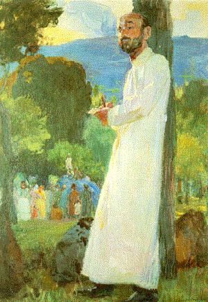
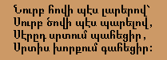
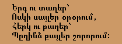

Komitas
1. There is a painting of Komitas by a well known Armenian artist whose name we can't remember. Can you find it and get us a copy?
Here is the painting by Eghishe Tadevosian (1870-1936). What is Komitas writing as he leans on that tree...?
|  |
2. Find the Armenian text of two poems by Komitas.
... Perhaps he is writing these poems, which can be found at http://www.erols.com/guerig/v1/komitas.html:
|  |
|
|  |
|
3. We also need a short biography of Komitas.
Komitas (Soghomon Soghomonian), was born in 1869 to a poor family living in Kütahya (Turkey), whose members spoke only Turkish. A short while after being orphaned in 1881, he was sent to study at Ejmiatsin. Very rapidly, he was attracted by the folksongs of neighboring Armenian villagers. He graduated from the Ejmiatsin seminary in 1894, became a vardapet (doctor in theology) in 1896, continued his musical studies in Berlin for three years, then returned to Ejmiatsin. In 1910, he moved to Constantinople where he founded a choir and a music school. In April 3, 1915, he gave a much acclaimed concert with his choir. Eleven days later, he was arrested and deported to the interior of the Ottoman Empire. In 1919, broken and mentally ill, he was liberated by his friends who brought him to Paris, where he died in 1935, without ever fully recovering from his physical as well as spiritual ordeal.
4. What other interesing sites can you find related to Armenian arts?
Here is one: http://www.arminco.com/mirror/WinArm/arts.html
(Click on the Linking icon to go back)